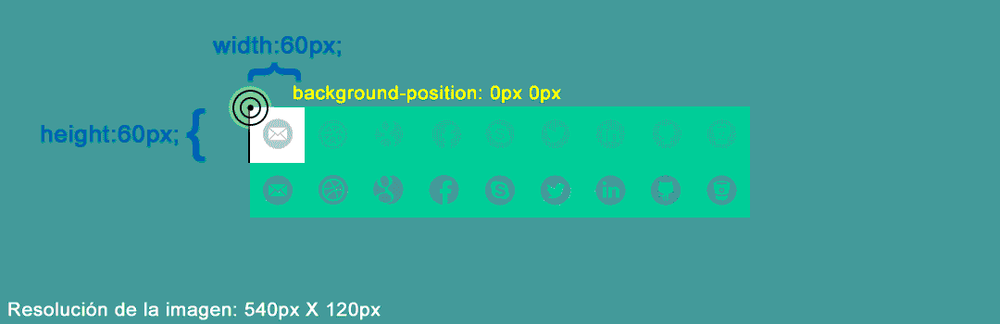

Se utiliza para agregar efectos de fondo a los elementos.
Background es la propiedad abreviada pero se puede dividir en las siguientes:
Se utiliza para agregar color de fondo. Se pueden utilizar varias funciones como es rgba(), rgb(), etc
<div style="background-color:dodgerblue; width: 50vw; height:250px; margin: auto 0;"></div>
Se puede hacer incluso degradados, pero con la propiedad background-image
Por ejemplo:
<div style="background-image:linear-gradient(90deg, rgba(2,0,36,1) 0%, rgba(9,9,121,1) 35%, rgba(0,212,255,1) 100%);
width: 50vw; height:250px; margin: 0 auto;"></div>
Se utiliza para indicar una imagen de fondo del elemento junto con la función url()
<div style="background-image:url("img/nombreArchivo.png"); width: 50vw; height:250px; margin: auto 0;"></div>
<div style="background-image:url("img/nombreArchivo.png"); width: 50px; height:50px; margin: auto 0;"></div>
Se utiliza si se repite la imagen en el caso de que el marco sea demasiado grande.
El valor por defecto es repeat, es decir, que se repite
Ejemplos:
<div style="background-image:url("img/nombreArchivo.png"); background-repeat:no-repeat ;width: 50vw; height:250px; margin: auto 0;"></div>
<div style="background-image:url("img/nombreArchivo.png"); background-repeat:repeat-y;width: 50vw; height:250px; margin: auto 0;"></div>
Se Utiliza para indicar la posición de la imagen de fondo con respecto al elemento marco.
El valor por defecto de la posición hará que la coordenada 0 en el eje X y la coordenada 0 del eje Y tanto del marco elemento, como la imagen de fondo coincidan
| Valor | Descripción |
|
left top
left center left bottom right top right center right bottom center top center bottom center center |
Si solo especifica una palabra clave, el otro valor será "centro" |
| x% y% | El primer valor es la posición horizontal y el segundo valor es la vertical. La esquina superior izquierda es 0% 0%. La esquina inferior derecha es 100% 100%. Si solo especifica un valor, el otro valor será 50%. El valor predeterminado es: 0% 0% |
| xpos ypos | El primer valor es la posición horizontal y el segundo valor es la vertical. La esquina superior izquierda es 0 0. Las unidades pueden ser píxeles (0px 0px) o cualquier otra unidad CSS. Si solo especifica un valor, el otro valor será 50%. Puedes mezclar % y posiciones |
| initial | Valor por defecto |
| inherit | Propiedad heredada del elemento padre. |
Ejemplo background-position xpos ypos:
